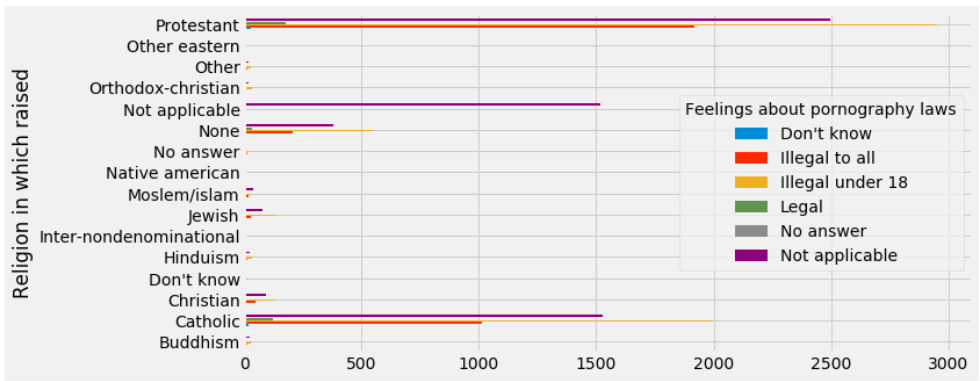

Pornography & Religion in USA
BY Elina Makri
Published August 04, 2018
A majority of Americans report that religion plays a very important role in their lives, a proportion unique among developed countries.
In accordance with an older Pew research:
"Religion is much more important to Americans than to people living in other wealthy nations. Six-in-ten (59%) people in the U.S. say religion plays a very important role in their lives. This is roughly twice the percentage of self-avowed religious people in Canada (30%), and an even higher proportion when compared with Japan and Western Europe. Americans’ views are closer to people in developing nations than to the publics of developed nations."
In the same time, the United States is the largest producer and exporter of hard core pornographic DVDs and web material, followed by Germany.
Porn sites get more visitors each month than Netflix, Amazon and Twitter combined (Huffingtonpost.com, June 6, 2014).
Given these impressive numbers, I thought here is an interesting and contradicting mix of social attitudes in USA.
Although in the data I analyze, I include several religions, it is important to point out that the vast majority of Americans are Christians (69%) raised mostly as Protestants.
There is no direct prohibition of pornography in the Bible. However, many Christians base their views on pornography on Matthew 5:27–28 (part of the Expounding of the Law):
"Ye have heard that it was said by them of old time, Thou shalt not commit adultery: But I say unto you, That whosoever looketh on a woman to lust after her hath committed adultery with her already in his heart."
PHOTO: Elina Makri
Break down of religions in USA
SOURCE: pewforum.org
Methodology & Challenges
My mission was to analyze a dataset of social attitudes towards pornography and religion.
What is the tolerance towards the industry of porn, the laws that rule the industry and the use of these services in accordance to the religion in which raised every American in our sample. The chicken-egg problem: Does the religion creates the tolerance or the torelance the religion (one identifies with).
x = cause
y = result
Analyzing data from the GSS: What can they tell us for tolerance and attitude towards porn issues.
I worked with data from the General Social Survey, which asks Americans thousands of questions ever year, over decades. I started by combining up to 10 variables (listed below) but soon I realized that the data were quite messy, hard to plot as the answers were not homogenius throughout the years.
I used their data explorer to see what's available -variables containing the Religion and variables related to pornography-, and downloaded the Excel file with the data.
I am interested in the beliefs / tolerance of the people related to pornography in accordance to their religion.
I wanted to do a logistic regression in order to look who is more possible to be more tolerant towards pornography. A Protestant? A Jewish person or a Catholic raised?
Do they think it is about a material that can lead to rape?
The initial variables I used:
-Religion in which raised
-How much info does r have on porn issue
-Importance of pornography issue to r
-Feelings about pornography laws
-Materials provide outlet
-Materials lead to rape
-Materials lead to breakdown in morals
-Materials provide info about sex
-Wonder if anything is worthwhile
-How firm is rs opinion on porn issue
Years Included: 1972-2016
After contacting GSS, asking what is the best way to combine variables, I ended up with 5 from multiple years in order to have sufficient cases broken down by religion. Only around 6% of respondents in any given year have paid for sex, so in order to have enough cases for the religious breakdown, I pooled 6 years of GSS data together (2006, 2008, 2010, 2012, 2014, 2016).
:
-Religion in which raised
-Feelings about pornography laws
-Seen x-rated movie in last year
-R had sex for pay last year
-Ever have sex paid for or being paid since 18

Sometimes, the absolute numbers is the best way to communicate a result.

...or the percentages.
Challenges:
-A big issue is how one visualizes categorical data and of course run regression.
-It is quite difficult to run logistic regression with both categorical data on "x" (the cause) and "y", (the result).
-PCA didn't work very will for this type of categorical data. There is no way to “order” the religion on an axis.
-It is hard to get a model for social attitudes, so a journalist should be very careful when not sure about the error terms (an error term is a variable in a statistical or mathematical model, which is created when the model does not fully represent the actual relationship between the independent variables and the dependent variables), regression diagnostic methods etc.
Also, confounding is a major concern in causal studies because it results in biased estimation of exposure effects. This may mean that a causal effect is suggested where none exists, or that a true effect is hidden.
It was very interesting to realize that by adding onw more variable -Ever have sex paid for or being paid since 18- the dataset changed completely. Although I started with 15956 rows, I ended up with analyzing very few. Every variable was a filter.
Results: If you are interested to look at the code in the jupyter notebook check the following link: https://github.com/ElinaMak/data_studio
A bar chart
PCA Analysis
It is quite difficult to get an easy conclusion by PCA.
PCA Analysis
colored graph

Logistic Regression
We see hardly any correlation between the religion and the attitude towards pornographic laws.